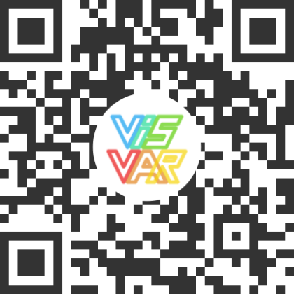

cARdLearner: Using Expressive Virtual Agents when Learning Vocabulary in Augmented Reality

Venue. CHI (2022) Late-Breaking Work
Authors. Aimee Sousa Calepso, Natalie Hube, Noah Berenguel Senn, Vincent Brandt, Michael Sedlmair
Abstract. Augmented reality (AR) has a diverse range of applications, including language teaching. When studying a foreign language, one of the biggest challenges learners face is memorizing new vocabulary. While augmented holograms are a promising means of supporting this memorization process, few studies have explored their potential in the language learning context. We demonstrate the possibility of using flashcard along with an expressive holographic agent on vocabulary learning. Users scan a flashcard and play an animation that is connected with an emotion related to the word they are seeing. Our goal is to propose an alternative to the traditional use of flashcards, and also introduce another way of using AR in the association process.
